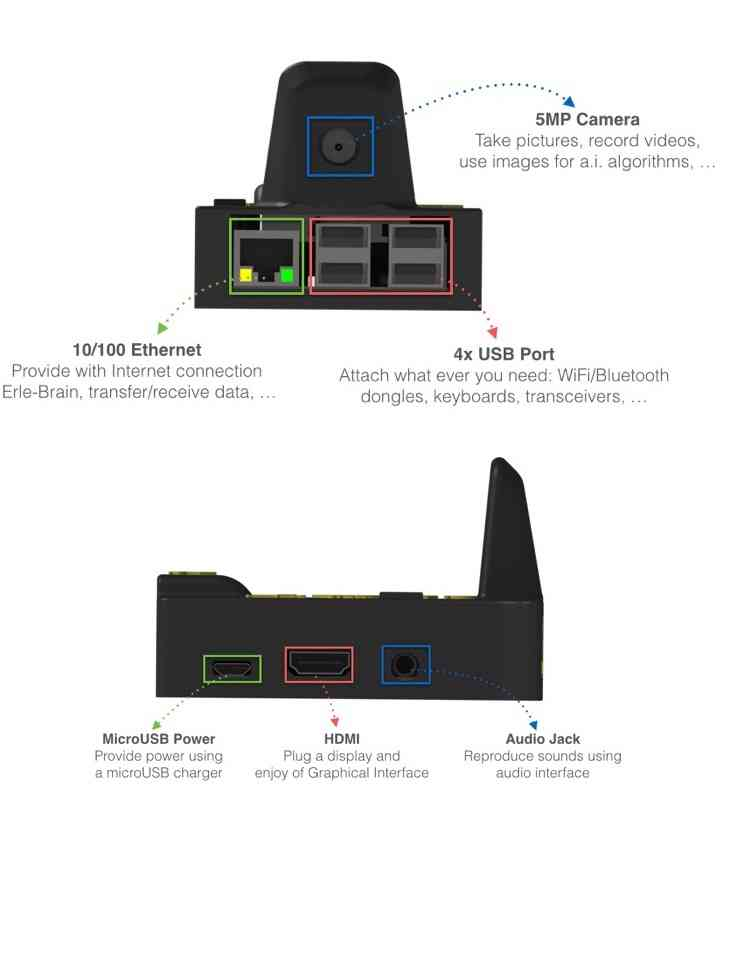
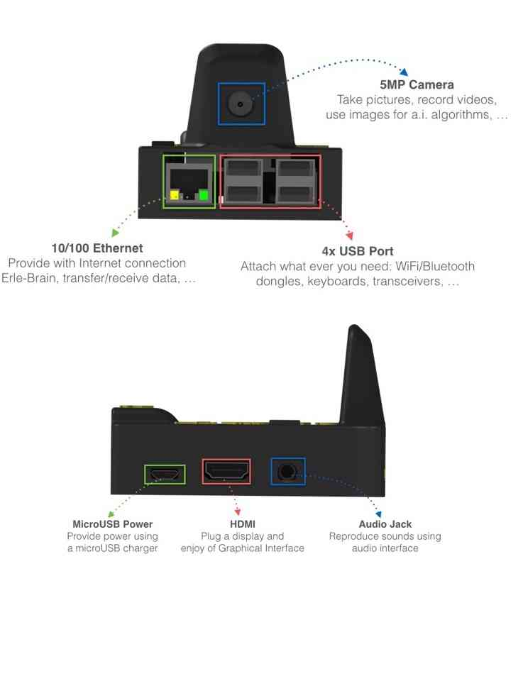

Archived Topic: Erle-Brain Linux Autopilot¶
This page presents the Erle-Brain Linux autopilot — an ArduPilot autopilot and companion computer in a single package.
Currently there are two versions of this Linux based Autopilot and a shield:
Erle-Brain 2: The new generation of artificial robotic brains for drones and robots that use DroneCode Foundation Tools, ROS and many other tools.
PXFmini: An open autopilot shield for the Raspberry Pi, placed here.
Erle-Brain 1 (*Discontinued)*: The first Open-Source Linux Autopilot that runs ArduPilot and ROS natively.
Erle-Brain based drones can be assembled as discussed in the official documentation. Erle-Brain based drones can also be purchased from the Erle Robotics official store in both ready to use and DIY kit form.
Erle-Brain 2¶
Erle-Brain 2 is the second generation of Linux-based artificial robotic brain for making robots and drones with official support for the Robot Operating System (ROS) and access to the app store.
It combines an embedded Linux computer (Raspberry Pi 2) and a daughter board containing several sensors, IO and power electronics. It is a Linux embedded device that runs ArduPilot as well many other frameworks and services for robotic application development.
Some Erle-Brain 2 features include:
Linux File Systems (Debian and Ubuntu Snappy Core)
WiFi-enabled
ROS focus (Indigo available)
ROS packages for sensors and peripherals
DroneKit-Python support
Snappy Ubuntu app store supported
MAVProxy can automatically bridge MAVLink packets to your WiFi network.
Sensors: Gravity sensor, gyroscope, digital compass, Pressure sensor and tempertature sensor, ADC for battery sensing.
Optional WiFi and Bluetooth.
Optional Camera: MP Fixed focus lens, 2592 x 1944 pixel static images, supports 1080p30, 720p60 and 640x480p60/90 video record.
The following images show the main ports/features available to Erle-Brain version 2.
 

{kind=link}
The next image shows the software characteristics that Erle-Brain 2 can handle:

Erle-Brain v2Development Stack¶
Quick start¶
The easiest way to get started is to SSH into Erle-Brain 2 and play around with it:
If connected by WiFi:¶
#password is holaerle.
$ ssh erle@erle-brain-2.local
If connected by Ethernet¶
#password is holaerle.
$ ssh erle@erle-brain-2.local
#Use ifconfig and nmap -sn commands to check the net
$ ssh erle@192.168.*.*
#password is holaerle.
Get more info in our docs
Erle-Brain can be purchased from the Erle Robotics store.
Hardware setup¶
Typical hardware setup for flying drones is:

If you wish more info about hardware connections, go to our docs
Building ArduPilot on Erle-Brain 2¶
Run the following instructions in the bash command prompt to build ArduPilot on Erle-Brain 2:
$ git clone --recurse-submodules https://github.com/erlerobot/ardupilot
$ cd ardupilot
$ cd ArduCopter
$ make erlebrain2 -j4
Camera¶
Camera images are fed into ROS directly using the raspicam_node that
it’s automatically launched. To be able to see the images, in your
Erle-Brain 2:
$ rosservice call /camera/start_capture
On you Desktop computer (or wherever you wish to visualize the images),
and after configuring appropriately the ROS_MASTER_URI environmental
variable:
$ rosrun image_view image_view image:=/camera/image _image_transport:=compressed
Erle-Brain can be purchased from the Erle Robotics store.
Erle-Brain 1 (Discontinued)¶
Erle-Brain combines an embedded Linux computer (the BeagleBone Black) and the PixHawk Fire cape — a daughter board containing several sensors, IO and power electronics. It is an open hardware Linux embedded device that runs ArduPilot as well many other frameworks and services for robotic application development.


Some Erle-Brain features include:
Linux File Systems (Debian and Ubuntu Snappy Core)
WiFi-enabled
ROS focus (Hydromedusa and Indigo available)
ROS packages for sensors and peripherals
DroneKit-Python support
Snappy Ubuntu app store supported
MAVProxy can automatically bridge MAVLink packets to your WiFi network.
3 IMUs (LSM9D, MPU9250, MPU6000)
Erle-Brain can be purchased from the Erle Robotics store.
Quick start¶
The easiest way to get started is to SSH into Erle-Brain and play around with it:
If connected by WiFi:¶
$ ssh 11.0.0.1
If connected by USB:¶
$ ssh 192.168.7.2
Hardware setup¶
General setup¶

RC out and in¶

Please note that the GND is in the lower pin of the header:
{kind=link}
Connecting the D4R-II receiver¶
Many might be interested in using this popular receiver so here’s an image that shows how to do it:

Building ArduPilot on Erle-Brain¶
Run the following instructions in the bash command prompt to build ArduPilot on Erle-Brain:
$ sudo apt-get install gawk gcc-arm-linux-gnueabihf g++-arm-linux-gnueabihf
$ git clone --recurse-submodules https://github.com/erlerobot/ardupilot
$ cd ardupilot
$ cd ArduCopter
$ make configure
$ make pxf
Snappy Ubuntu Core store¶
Erle-Brain comes with full support for Snappy Ubuntu Core. Just fetch one of the available images (for the microSD card) and start developing snaps.
Note
Snappy Ubuntu Core is a new rendition of Ubuntu with transactional updates - a minimal server image with the same libraries as today’s Ubuntu, but applications are provided through a simpler mechanism. The snappy approach is faster, more reliable, and lets us provide stronger security guarantees for apps and users — that’s why we call them “snappy” applications.

Snappy “hello world” example¶
The bash commands below show how to install and run a basic “Hello World” app using Snappy:
$ snappy-go install hello-world
$ echo.hello-world.canonical
Hello World!
Additional information about Snappy Ubuntu Core can be found here.
DroneKit¶
3DR’s Python DroneKit runs perfectly in Erle-Brain. Full documentation for the Kit and API can be found at the python.dronekit.io.
The commands below summarise how to install the kit and its dependencies on Erle-Brain:
$ sudo apt-get install pip python-numpy python-opencv python-serial python-pyparsing python-wxgtk2.8
$ sudo pip install droneapi
DroneKit “hello world” example¶
# fetch the code
$ git clone https://github.com/ArduPilot/droneapi-python.git
$ cd droneapi-python/example
# Start MAVProxy (install if not present)
$ mavproxy.py --master=udp:192.168.7.2:6000
MANUAL> module load droneapi.module.api
DroneAPI loaded
MANUAL>
Now run the example:
MANUAL> api start small_demo.py
Mode: VehicleMode:MANUAL
Location: Location:lat=21.2938874,lon=-157.8501416,alt=0.189999997616,is_relative=None
Attitude: Attitude:-0.286077767611,-3.01412272453,0.261489063501
GPS: GPSInfo:fix=1,num_sat=0
Param: 75.0
waiting for download
Requesting 10 waypoints t=Mon Mar 31 09:41:39 2014 now=Mon Mar 31 09:41:39 2014
Home WP: MISSION_ITEM {target_system : 255, target_component : 0, seq : 0, frame : 0, command : 16, current : 1, autocontinue : 1, param1 : 0.0, param2 : 0.0, param3 : 0.0, param4 : 0.0, x : 21.2921352386, y : -157.848922729, z : 89.1800003052}
APIThread-0 exiting...
APM: Non-Nav command ID updated to #255 idx=1
waypoint 1
AUTO>
Further documentation¶
More information about Erle-Brain is available in its official documentation or from Erle Robotics forum.
[site wiki=”planner”]
[/site]
[copywiki destination=”plane,copter,rover,blimp”]